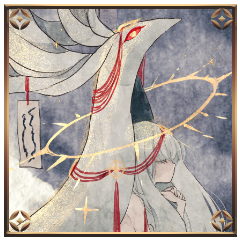

ラウンド４
GM
各人プロットを決定し、秘話での申告をお願いします。
[ 御祀 潺 ] がダイスシンボルを公開。出目は 5 です。
[ 煤木野灰吏 ] がダイスシンボルを公開。出目は 4 です。
[ 葛火焔郎 ] がダイスシンボルを公開。出目は 3 です。
[ 藻久去鹿彌 ] がダイスシンボルを公開。出目は 2 です。
GM
＊ラウンド４
プロット５：御祀潺
プロット４：煤木野灰吏
プロット３：葛火焔郎
プロット２：藻
プロット５ 行動：御祀潺
御祀 潺
2D6>=6 （判定：用兵術） (2D6>=6) ＞
10[4,6] ＞ 10 ＞ 成功
GM
スペシャル。凶手でスペシャル値が10に減少している。
スペシャルすると生命力１点か変調１つを回復できる。
それが集団戦の攻撃忍法の命中判定だった場合、与える変調を任意に指定することができる。
[ 御祀 潺 ] 戦術 : 0 → 1
御祀 潺
呪いです変調の一種。ランダムに選択された忍法の一つが使用不能になる。
全ての忍法が《呪い》を受けるまで、この効果は累積する。
GM
了解です。呪いの場合、使用不能になる忍法に関してはランダムと裁定いたします。
煤木野灰吏
2D6-4>=7 （判定：遊芸） (2D6-4>=7) ＞
5[1,4]-4 ＞ 1 ＞ 失敗
[ 煤木野灰吏 ] 忍術 : 1 → 0
御祀 潺
「そんな顔を、するものではありませんよ」
プロット４ 行動：煤木野灰吏
煤木野灰吏
2D6>=5 （判定：拷問術） (2D6>=5) ＞ 7[3,4]
＞ 7 ＞ 成功
煤木野灰吏
2D6>=5 （判定：遊芸） (2D6>=5) ＞ 5[1,4]
＞ 5 ＞ 成功
葛火焔郎
1D6-2 (1D6-2)
＞ 1[1]-2 ＞ -1
GM
自分の秘密を提示し、演出の後に+3をつけて判定を。
葛火焔郎
全身を絡め取るワイヤーに迸る熱も、肺を灼く灰も。
葛火焔郎
焔を宿した瞳は、髪を、肌を、腕を、顔を、瞳を。
葛火焔郎
勝ちたい。勝って、おまえと一緒にいたい。
葛火焔郎
誰よりも自分のことを想ってくれたひとを、振り払ってなお。
葛火焔郎
絶対に勝ちたい。勝つ。勝つ。勝つ！おまえに！
葛火焔郎
笑ってほしい。神としてではなく、人の子として。
【秘密：葛火 焔郎】
あなたは超然たる藻に負かされ続ける一方で、誰よりも近くで触れ合い、藻が当たり前に笑う姿を見てきた。
あなたは藻が神などではなく自分たちと同じ人間であることを信じている。
それを証明するためには、藻に敗北というものを教えてやらなければならないと思っている。
あなたの本当の使命は【藻が人間であることを証明する】である。
葛火焔郎
2D6+3+1+1>=10 （判定：骨法術） (2D6+3+1+1>=10) ＞
7[2,5]+3+1+1 ＞ 12 ＞ 成功
煤木野灰吏
数え切れないほど挑み続けるのを、その勝負の結果を。
煤木野灰吏
一度も勝てた試しがないのに、絶対に諦めない姿を。
煤木野灰吏
お前が藻様を地に叩き伏せる姿を、いつか。
葛火焔郎
――少女を、見つめ続ける瞳が、一瞬だけ逸れて。
煤木野灰吏
俺の言うことなんか聞きやしないんだもんな。
煤木野灰吏
その祈りの向く先がどちらなのか、もはや自分にも分からない。
プロット３ 行動：葛火焔郎
葛火焔郎
【春雷】鞍馬神流の攻撃忍法。間合1コスト2、接近戦ダメージ2点。
命中判定と別にもう一つの任意の特技で判定し、その特技での回避判定を要求できる。
二回目の判定を失敗した場合、命中判定に失敗したものと扱う。を使用します。対象は藻。【陽炎】を載せます。
葛火焔郎
2D6>=6 （判定：骨法術） (2D6>=6) ＞ 7[3,4]
＞ 7 ＞ 成功
GM
そのまま【春雷】の命中判定から。-2をつけて。
葛火焔郎
2D6-2>=5 （判定：骨法術） (2D6-2>=5) ＞
7[3,4]-2 ＞ 5 ＞ 成功
GM
成功ですね。任意の特技でもう一度判定してください。
葛火焔郎
2D6>=5 （判定：手裏剣術） (2D6>=5) ＞ 6[2,4]
＞ 6 ＞ 成功
GM
骨法術と手裏剣術、どちらを指定いたしますか？＞焔郎
GM
【陽炎】と【忍法修行】につき、-3の修正がつきます。

藻久去鹿彌
2D6-3>=9 （判定：第六感） (2D6-3>=9) ＞
9[3,6]-3 ＞ 6 ＞ 失敗
GM
接近戦ダメージが３点。春雷の2点に目覚めの1点。
葛火焔郎
3D6 (3D6) ＞
10[1,4,5] ＞ 10
[ 藻久去鹿彌 ] 器術 : 1 → 0
[ 藻久去鹿彌 ] 謀術 : 1 → 0
[ 藻久去鹿彌 ] 戦術 : 1 → 0
葛火焔郎
跳び上がり、重力のたっぷりと乗った脚の一撃。
藻久去鹿彌
一撃のもと骨の脚が頽れる。
4つ足の獣を模した足が、神域に膝をつく。
プロット２ 行動：藻
藻久去鹿彌
血旋渦を使用します。
対象は煤木野灰吏。
藻久去鹿彌
2D6>=5 （判定：異形化） (2D6>=5) ＞ 8[2,6]
＞ 8 ＞ 成功
煤木野灰吏
2D6+1>=9 （判定：流言の術） (2D6+1>=9) ＞
10[5,5]+1 ＞ 11 ＞ 成功
藻久去鹿彌
頽れた神の臓腑から血が零れる。
草木のように芽吹いて迫った。
藻久去鹿彌
綿毛、花びら。
水の飛沫。そういった形に降りた神気。
ラウンド５
[ 御祀 潺 ] がダイスシンボルを公開。出目は 5 です。
[ 煤木野灰吏 ] がダイスシンボルを公開。出目は 6 です。
[ 藻久去鹿彌 ] がダイスシンボルを公開。出目は 2 です。
[ 葛火焔郎 ] がダイスシンボルを公開。出目は 3 です。
GM
＊ラウンド５
プロット６：煤木野灰吏
プロット５：御祀潺
プロット３：葛火焔郎
プロット２：藻
プロット６ 行動：煤木野灰吏
煤木野灰吏
2D6>=5 （判定：遊芸） (2D6>=5) ＞ 5[1,4]
＞ 5 ＞ 成功
煤木野灰吏
人の肉をも断つ鋼線は、それを操る灰吏自身も傷つける。
葛火焔郎
あなたが見つめ続けた葛火焔郎そのままに。
煤木野灰吏
もっと周りも見ろっていつも言ってるだろ。
煤木野灰吏
力の入らない指先を、鋼線が滑り落ちる。
プロット５ 行動：御祀潺
御祀 潺
2D6>=6 （判定：用兵術） (2D6>=6) ＞
10[5,5] ＞ 10 ＞ 成功
[ 御祀 潺 ] 謀術 : 0 → 1
GM
接近戦攻撃汎用忍法。間合1コスト0、接近戦ダメージ1点。
修得必須忍法。いざという時に結構頼れたりする。ですね。
御祀 潺
それは、あなたや、あなたたちの家族がそうであるように。
御祀 潺
焔郎にとっての、彼女がそうであるように。
御祀 潺
彼女にとっての焔郎が、そうであるように。
煤木野灰吏
それを、あいつにも言ってやってくれよ……。
プロット３ 行動：葛火焔郎
葛火焔郎
2D6>=6 （判定：骨法術） (2D6>=6) ＞ 8[4,4]
＞ 8 ＞ 成功
葛火焔郎
2D6-2+1>=5 （判定：骨法術） (2D6-2+1>=5) ＞
3[1,2]-2+1 ＞ 2 ＞ 失敗
葛火焔郎
裂けた肉が、割れた骨が、軋み、悲鳴を上げる。
葛火焔郎
その身から立ち上がる陽炎が揺らぎ、揺らめき。
葛火焔郎
立ち上る焔と裏腹に顔は真っ青で。唇は震えて。
藻久去鹿彌
少女はとなりに。
だいすきな男の子の熱を感じている。
葛火焔郎
ずっと見られてきた。泣いた顔も、怒った顔も。
藻久去鹿彌
恋だけを歌って。
今はただ神になりかけて。
葛火焔郎
おまえは俺の幼馴染で、あたりまえの女の子で、
葛火焔郎
拳が燃える。火が肌を焼き、肉を焦がし、骨を灼く。
プロット２ 行動：藻
[ 藻久去鹿彌 ] 体術 : 0 → 1
藻久去鹿彌
鹿神の首から少女の手が伸びて。
少年の頬に触れる。
藻久去鹿彌
あまりに短い一瞬。
そっと鼻先を鼻先にすり寄せて。